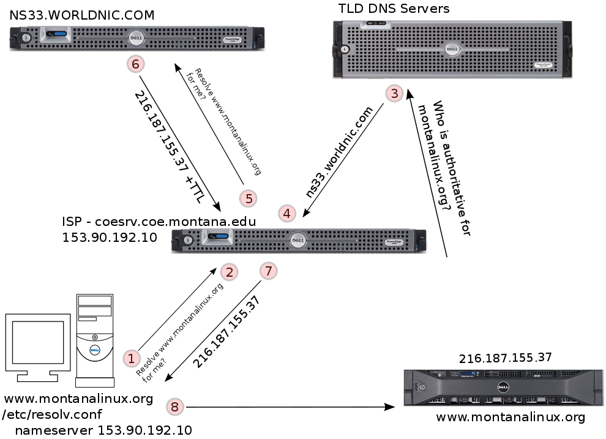

16 - Network Configuration
Please DO NOT edit nor attempt to alter the network configuration of your student KVM VM.
What network card do I have?
lspci is provided by the pciutils package
$ lspci | grep -i net # will work in KVM VM [or physical machine]
00:03.0 Ethernet controller: Red Hat, Inc Virtio network deviceNetwork basics
To configure the network on a computer you usually need to know a few pieces of information:
- IP address
- Default gateway
- Network mask
- DNS
If your network uses DHCP (Dynamic Host Configuration Protocol) you can use a dhcp client application and have your computer get all of the needed network settings from the DHCP server.
Tools to configure the network
- nmcli - https://www.youtube.com/watch?v=6xfSUdxeasA
- nmtui - https://www.youtube.com/watch?v=E7gWVZrZbUY
- nm gui - https://www.youtube.com/watch?v=QJd3AJW05Aw (applets for KDE and GNOME)
Lower Level Tools: ip, ifconfig
How to set the system hostname
$ hostnamectl set-hostname {host.domain.tld}$ hostnamectl set-hostname kvm-dowdle.localdomainWhat package provides it? - new-tools
Example configurations
[root@csci351 ~]# cat /etc/sysconfig/network-scripts/ifcfg-ens18
TYPE=Ethernet
PROXY_METHOD=none
BROWSER_ONLY=no
BOOTPROTO=none
DEFROUTE=yes
IPV4_FAILURE_FATAL=yes
IPV6INIT=yes
IPV6_AUTOCONF=no
IPV6_DEFROUTE=yes
IPV6_FAILURE_FATAL=no
IPV6_ADDR_GEN_MODE=stable-privacy
NAME=ens18
UUID=a28f5b2c-99b4-454c-b3f4-0e3efb89baeb
DEVICE=ens18
ONBOOT=yes
IPADDR=153.90.127.176
PREFIX=24
GATEWAY=153.90.127.254
DNS1=153.90.2.1
DNS2=153.90.2.15
DOMAIN="cs.montana.edu msu.montana.edu coe.montana.edu"
IPV6_PRIVACY=no- Please note that
/etc/hostsis a special file in that it can be used as a sort of “local DNS.” /etc/hostsis usually consulted before the specified nameservers and/etc/hostscan be used to override DNS lookups if desired.
/etc/hosts sample contents:
[dowdle@csci351 ~]$ cat /etc/hosts
(examine the output... short excerpt below)
192.168.122.101 kvm-101.localdomain kvm-101 kvm-alghamdi
192.168.122.102 kvm-102.localdomain kvm-102 kvm-alvarez
192.168.122.103 kvm-103.localdomain kvm-103 kvm-arstein
[...]
92.168.122.157 kvm-157.localdomain kvm-157 kvm-wilkerson
192.168.122.158 kvm-158.localdomain kvm-158 kvm-wintersteen
192.168.122.159 kvm-159.localdomain kvm-159 kvm-zetterbergDNS configuration is stored in /etc/resolv.conf. Where we define in a system who we talk to in DNS.
Here is an example /etc/resolv.conf:
[sdowdle@csci351 ~]$ cat /etc/resolv.conf
# Generated by NetworkManager
search cs.montana.edu msu.montana.edu coe.montana.edu
nameserver 153.90.2.1
nameserver 153.90.2.15How does DNS work anyway? 